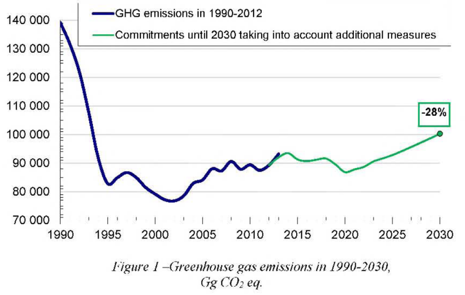

pursuant to paragraphs 13 and 14 of Decision 1/CP.20 adopted by the Conference of the Parties to UNFCCC
The Republic of Belarus supports the collective efforts of the Parties to the United Nations Framework Convention on Climate Change (hereinafter referred to as UNFCCC) to achieve the major milestone of this century - keeping the average global temperature rise below two degrees Celsius as compared to the preindustrial period. In order to contribute to the prevention of dangerous climate change, the Republic of Belarus submits its intended nationally determined contribution to these efforts and undertakes by 2030 to reduce greenhouse gas emissions by at least 28 per cent of the 1990 level, excluding emissions and removals in the land use, land-use change and forestry sector and without any additional conditions (the commitments do not imply the use of the international carbon market mechanisms or mobilizing foreign financial resources for the implementation of best available technologies).
Figure 1 shows the dynamics of greenhouse gas emissions over the period of 1990-2012 and projections until 2030 based on the scenario, which takes account of the approved programmes for the development of sectors of the economy including the commissioning in 2018 of the Belarusian Nuclear Power Plant and additional policies and measures to reduce carbon intensity. According to the projections, after 2030 an upward trend in greenhouse gas emissions will continue to be observed with a peak in 2035.
2eq." width="412" height="261" />
Absolute reduction of greenhouse gas emissions compared to the emissions in the base year.
Year 1990 is chosen as the base year for determinsing quantifiable greenhouse gas emission reduction target. The same year was also adopted by the Republic of Belarus as the reference point when undertaking greenhouse gas emission commitments as part of previous international agreements on climate change.
To obtain data on greenhouse gas emissions in the base year, the National Greenhouse Gas Inventory of 2012 was used. The data of this inventory were also included in the Sixth National Communication sent to the UNFCCC Secretariat in February 2015, and underwent expert review by the UNFCCC Secretariat in April 2015.
According to these data, greenhouse gas emissions in 1990 were 139,151.23 thousand tons in CO2 eq., excluding the land use, land-use change and forestry sector (hereinafter referred to as LULUCF).
Taking into account the National Sustainable Development Strategy until 2030, the year 2030 is taken as the target year for these commitments.
Therefore, the validity period of all commitments and targets of this document covers the period from 1 January 2021 to 31 December 2030
In view of the methodology adopted in the country and reporting requirements regarding UNFCCC greenhouse gas inventories, the current commitments cover information on greenhouse gas emissions in the following sectors:
Approaches regarding the inclusion of the LULUCF sector into these commitments, which in the Republic of Belarus represents net removals of carbon from the atmosphere, will be determined after clarification of the methodological questions relating to the estimation of emissions and removals of greenhouse gases in this sector. No later than 2020, the Republic of Belarus will return to the question of including the potential of this sector in its commitments. These commitments include the following greenhouse gases:
Long-term targets, on which the climate policy until 2020 is based, are specified in the Directive of the President of the Republic of Belarus No.3 of 14.06.2007 "Economy and thrift are the main factors of the economic security of the state", the Concept of Energy Security of the Republic of Belarus (adopted by the Decree of the President of the Republic of Belarus No.433 of 17.09.2007), the Strategy for the Development of Energy Potential of the Republic of Belarus (adopted by the Resolution of the Council of Ministers of the Republic of Belarus No. 1180 of 09.08.2010), national and sector-specific modernization and development programmes for the period until 2020, which list is presented in the Sixth National Communication (2015), including the National Programme of Measures to Mitigate Climate Change for 2013-2020 (adopted by the Resolution of the Council of Ministers of the Republic of Belarus No.510 of 21.06.2013). Thus, currently and until the end of 2020 there are various binding legislative provisions and other regulations in effect in the Republic of Belarus, specifying policies and measures with targets for the reduction of energy and carbon intensity of the national economy.
For the period of 2021-2030, the National Sustainable Development Strategy until 2030 approved by the Presidium of the Council of Ministers of the Republic of Belarus is a benchmark, which places due emphasis on the development principles founded on a low-carbon economy.
In 2016-2019, the legislative basis for the new national climate policy will be elaborated along with the programmes for the development of major economic activities for the period of 2021-2030, including measures regulating and stimulating the reduction of greenhouse gas emissions.
Figure 2 gives data on the dynamics of greenhouse gas emissions for the years 1990-2012.
During the period under review, maximum greenhouse gas emissions were observed in 1990: 139,151.23 thousand tons of CO2-eq. (excl. LULUCF). In 2012, the emissions amounted to 89,283.33 thousand tons in CO2-eq. (excl. LULUCF) and decreased by 35.8 per cent as compared to 1990.
Such reduction in greenhouse gas emissions was, first, due to the dramatic emission reduction during the 1990-1995 period as a consequence of the economic recession in the country following the dissolution of the Soviet Union and the subsequent decrease in production and fuel consumption.
From 1995, a period of economic growth commenced, in the course of which the per capita gross domestic product (with account of purchasing power parity) demonstrated a 4.5-time increase by 2012. Greenhouse gas emissions also increased due to the growth of production, increased fuel consumption and increased volumes of landfilled waste. However, the emissions increase rate is significantly lower than the GOP growth rate (Figure3). The average annual GOP growth during the 1995-2012 period was 7.9 per cent, while the average annual increase of greenhouse gas emissions during the same period was 0.4 per cent. The carbon intensity of the economy during the period 1995-2012 decreased 3.9 times; this is the fastest rate of progress towards achieving low-carbon development parameters in Europe

The country managed to considerably reduce greenhouse gas emissions in the past by effectively implementing measures with relatively low marginal costs. During the period of 1995-2005 on average 1.6 per cent of the GOP was spent on improving energy efficiency, energy conservation and deployment of renewable energy sources. In 2006-2010, these investments were as high as 3.4 per cent of the GOP, and in 2011-2015 were 5 per cent. The share of state budget funds in these investments was at least 30 per cent This made it possible to rapidly approximate to other developed countries with similar climates in ten11S, for example, of such indicator as GDP energy intensity. Belarus has one of the lowest values in Europe for the carbon intensity of its energy system - about 0.3 tons in CO2-eq. for the generation of one MWh of heat and electricity, thus approaching such countries as Japan and the USA regarding installed capacity utilization efficiency.
Taking into account Decision 24/CP.19 regarding the submission of these commitments, the information on greenhouse gas emissions is based on the use of the following methodological guidelines:
The following models and methods were used for the projection of greenhouse gas emissions:
The Republic of Belarus is one of the UNFCCC Annex I countries and therefore, along with other countries included in this Annex, has to bear the main burden of commitments. The Republic of Belarus does not have additional financial resources to accelerate the adoption of best international practices and the implementation of best available technologies. In the context of existing high marginal costs and economic growth rates the ability of the country to mobilize funds and secure additional investment in low-carbon technologies is limited.
During the entire first commitment period of the Kyoto Protocol the Republic of Belarus could not attract carbon funding because its assigned amount of greenhouse gas emissions was not established (Amendment to Annex B adopted by the Parties in Decision 10/CN'IP.2 was not ratified), and the prospects for using instruments of the international carbon market in 2013-2020 are minimal in the context of the effect of Article 3, paragraph 7 ter of the Doha Amendment adopted by the Parties in Decision 1/CMP.8.
However, the Republic of Belarus intends to continue reducing the carbon intensity of its economy. The country acknowledges that in many sectors of the economy there is still high potential for preventing climate change. In contrast to the scenarios based on the existing development programmes, which imply reductions of emissions by 20-22% in 2030 as compared to the base year, according to some estimates it is possible to achieve an additional reduction of greenhouse gas emissions of approximately 25-30 million tonnes of CO2-eq. during the period of 2015-2030, and the Republic of Belarus includes this possibility in its commitments.
These commitments rely solely on the internal potential of the country and are taken without any additional conditions regarding possible mobilization of foreign funds for the implementation of best available technologies. Despite the achievements in economic development and development of the market economy, the GDP (PPP) per capita remains one of the lowest among Annex I countries, while the share of investment in capital assets is insufficient to ensure expanded production.
In these conditions, the nationally determined contributions for mitigation of climate change stated by the Republic of Belarus are fair and ambitious.
Due to planned actions to ensure sustainable forest management, the forest cover of the country increased by 4.3% since 1990, and currently is continuing to grow. According to the sector-specific forestry development programme, the policy for increasing the resource potential of forests and ensuring the sustainable forest use will be further implemented. In line with the priorities of the National Sustainable Development Strategy of the Republic of Belarus until 2030, measures will be implemented to increase the area under forest from 39.4% in 2013 up to 41% in 2030.
Pursuant to the Strategy for the Implementation of the United Nations Convention to Combat Desertification in Those Countries Experiencing Serious Drought and/or Desertification, Particularly in Africa (approved by the Resolution of the Council of Ministers of the Republic of Belarus No.361 of 29.04.2015) the Republic of Belarus in 2015-2030 will ensure the environmental rehabilitation of at least 10,000 ha of damaged bogs, thus increasing the area of restored peatlands to at least 60,000 ha by 2030 and reducing the area of degraded reclaimed land with peat soils up to 190,000 ha by 2030.
Pursuant to the Strategy for the Implementation of the Convention on Wetlands of International Importance Especially as Waterfowl Habitat (approved by the Resolution of the Council of Ministers of the Republic of Belarus No. 177 of 10.02.2009), the Republic of Belarus will undertake measures to conserve the main habitats of the populations of rare and endangered wild animals and plant species living or growing in wetlands, involving an area of at least 30,000 ha of open fen mires, 40,000 ha of floodplain meadows, and 160,000 ha of raised bogs and transitional mires.
Pursuant to the National Strategy for the Development of the System of Strictly Protected Areas until 2030 (approved by the Resolution of the Council of Ministers of the Republic of Belarus No.649 of 02.07.2014) efforts will be made to ensure further conservation of natural ecosystems, biological and landscape diversity, ensuring ecological balance of natural systems and sustainable use of protected areas covering at least 8.8% of the territory of the country.
Forestry and agriculture are the sectors most vulnerable to climate change in the Republic of Belarus. Considering the significant influence of climate change on the sustainable development of the economy, and the well-being and health of the population of the country, the Republic of Belarus is formulating national policy on the adaptation to climate change through the elaboration of national strategies, sector-specific and regional programmes and plans for adaptation to climate change and their subsequent implementation. So far the Strategy for the Adaptation of Forestry to Climate Change until 2050 has been developed. The Strategy for the Adaptation of Agriculture to Climate Change is currently being developed.
In 2016-2019 the legislative and institutional basis for climate change adaptation will be formed; and mechanisms for the collection and transfer of information, fast response in emergency situations, accounting of current and future risks related to climate change, inclusion of adaptation measures into sector specific programmes and programmes of the socioeconomic development of the Republic of Belarus and its administrative territories will be developed.
In 2017-2030, programmes of adaptation actions and practices will be developed as part of recreation and health-promotion activity, territorial development, planning of transport infrastructure, development of urban planning projects (general, special, detailed planning).
The Republic of Belarus has supported and will support developing nations, mainly in the area of awareness-raising, education, capacity building, and in the area of research and development relating to climate change issues.